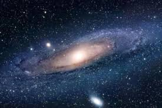

|

Samanyolu Galaksisi
Samanyolu Galaksisi, içinde yaşadığımız ve Güneş Sistemi’nin de bir parçası olduğu devasa yıldız sistemidir. Yaklaşık 100.000 ışık yılı çapında olup,
200 ila 400 milyar yıldız barındırdığı tahmin edilmektedir. Galaksi, adını gece gökyüzünde sanki süt gibi beyaz bir nehir gibi görünen yıldız yoğunluğundan
alır.
Samanyolu, sarmal (spiral) yapıya sahip bir galaksidir. Merkezinde yoğun bir yıldız kümesi bulunur ve bu bölgenin ortasında Sagittarius A* adı verilen dev
bir kara delik yer alır. Kollar şeklinde dışa doğru uzanan yapılar, yıldızlar, gaz ve toz bulutlarından oluşur. Güneş Sistemi, bu kolların biri olan Orion
Kolu üzerinde, merkeze yaklaşık 27.000 ışık yılı uzaklıkta yer alır.
Galaksinin disk kısmında yıldızlar, nebulalar ve gezegen sistemleri bulunurken, çevresinde halo adı verilen küresel bir bölge vardır. Bu haloda eski yıldız
kümeleri ve karanlık madde bulunduğu düşünülmektedir. Karanlık madde, galaksinin kütlesinin büyük kısmını oluşturmasına rağmen doğrudan gözlemlenemez.
Samanyolu’nun merkezinde yıldız yoğunluğu çok fazladır ve yıldızlar burada daha hızlı döner. Galaksinin kendi etrafındaki bir dönüşü tamamlaması yaklaşık
230 milyon yıl sürer.
Bilim insanları, Samanyolu’nun Andromeda Galaksisi ile yavaşça birbirine yaklaştığını ve yaklaşık 4 milyar yıl sonra bu iki galaksinin çarpışarak
birleşeceğini öngörmektedir.
Özetle, Samanyolu Galaksisi sadece yıldızlardan ibaret bir sistem değildir; aynı zamanda gezegenler, uydular, gaz ve toz bulutları, kara delikler
ve karanlık maddeyi barındıran, evrende insanlığın şu anki kozmik adresidir.
|